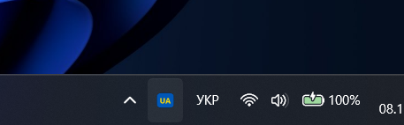
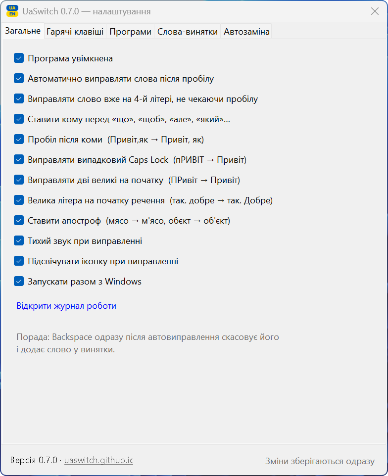

Що вміє
Працює у Word, Excel, Outlook, браузері, Telegram — будь-де, де ви набираєте текст.
Виправляє на ходу
Часто вже на 4-й літері: ghbd → прив, далі ви набираєте в правильній розкладці.
Вручну, коли треба
Pause або двічі Shift — останнє слово. Двічі Ctrl — виділений текст.
Легко скасувати
Backspace одразу після виправлення повертає як було й запам'ятовує слово.
Апостроф
мясо → м'ясо, обєкт → об'єкт. Повний словник української: «бюро» й «буряк» не чіпає. Працює й у Word.
Коми і регістр
знаю де він → знаю, де він, так. добре → так. Добре, пРИВІТ → Привіт.
Автозаміна
Ваші скорочення стають текстом: .дяк → «Дякую за допомогу!». Навіть у неправильній розкладці.
Caps Lock — мова
За бажанням Caps Lock перемикає УКР ↔ АНГЛ одним натисканням, а великі літери — Shift+Caps.
Не заважає в роботі
Не чіпає коди, номери, абревіатури й email. Можна вимкнути в окремих програмах.
Мінімум програми — максимум користі
UaSwitch робить одну річ — допомагає набирати текст — і робить її добре.
Мінімалістичний
- Один файл
UaSwitch.exeменше 1 МБ, без інсталятора - Працює на вбудованому в Windows .NET — нічого докачувати
- Взагалі не виходить в інтернет: ні оновлень, ні статистики, ні акаунтів
- Одне вікно налаштувань: зміни діють одразу, кожна функція вимикається окремо
Функціональний
- Виправляє розкладку, часто вже на 4-й літері, з урахуванням мови речення
- Ставить апострофи й коми, велику літеру на початку речення, лікує Caps Lock
- Не чіпає коди, номери, абревіатури й імена файлів
- Будь-яке виправлення скасовується одним Backspace
Порівняння з аналогами
| UaSwitch | Punto Switcher | Caramba Switcher | Klavko | |
|---|---|---|---|---|
| Автовиправлення УКР ↔ АНГЛ | Так | Ні, лише RU ↔ EN | Ні, EN / RU / DE | Так |
| Відкритий код | Так, MIT | Ні | Ні | Відкритий, без ліцензії |
| Розробник | Україна | Яндекс (під санкціями в Україні) | Російський | Україна |
| Підхід | Лише набір тексту | — | — | Комбайн: голос, переклад, буфер обміну |
Klavko — сильний український проєкт для macOS з бета-версією для Windows, який вміє набагато більше. UaSwitch свідомо робить лише набір тексту, тому лишається крихітним і повністю офлайновим. Дані станом на листопад 2026.
Іконка біля годинника
Завжди видно, яка розкладка зараз увімкнена.

Українська
Синьо-жовта іконка
Англійська
Темна іконка
Щойно виправлено
На мить стає зеленою, лунає тихий клік
Вимкнено
Сіра іконка
Прості налаштування
Подвійний клік по іконці відкриває вікно налаштувань. Кожну функцію можна вимкнути окремо, а зміни діють одразу — без кнопки «Зберегти».
Вкладки «Програми» і «Слова-винятки» дозволяють вказати, де і що програма не повинна виправляти. А меню іконки має пункт «Не виправляти в цій програмі».

Як встановити
Дві хвилини, без інсталятора.
- Завантажте архів і розпакуйте в постійну папку, наприклад
C:\Programs\UaSwitch. - Права кнопка на
UaSwitch.exe→ «Властивості» → галочка «Розблокувати» → OK. - Запустіть програму. Біля годинника з'явиться іконка
UA/EN. - Подвійний клік по іконці → «Запускати разом з Windows».
Ваш текст нікуди не потрапляє
Програма пам'ятає лише поточне слово в оперативній пам'яті й не підключається до інтернету. На диск потрапляють тільки налаштування, винятки й ваш список автозаміни. Код відкритий — це може перевірити будь-хто.
Антивірус попереджає? Це хибне спрацювання: перемикачі розкладок стежать за клавіатурою, а UaSwitch ще новий і без цифрового підпису. Файл передано в Microsoft на перевірку.